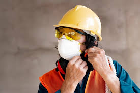
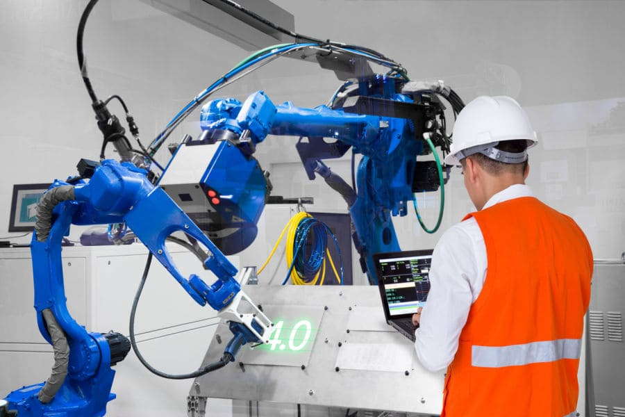
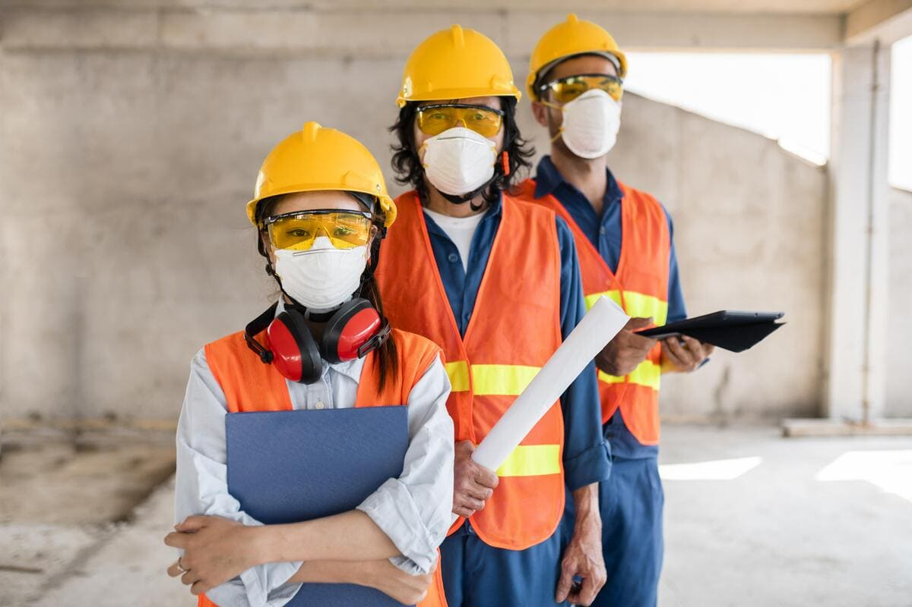

Semana Interna de Prevenção de Acidentes do Trabalho
IFPA – Campus Ananindeua
Trabalhador 4.0 – Tecnologia, Segurança e Futuro do Trabalho
O que é a SIPAT?
A Semana Interna de Prevenção de Acidentes do Trabalho (SIPAT) é um evento previsto na legislação brasileira,
promovido pela CIPA, com o objetivo de conscientizar trabalhadores e estudantes sobre a prevenção de acidentes
e doenças relacionadas ao trabalho.
No IFPA Campus Ananindeua, a SIPAT 2026 tem como foco a formação dos alunos do Curso Técnico,
incentivando atitudes seguras, responsabilidade profissional e valorização da vida.
Segurança do Trabalho
A Segurança do Trabalho compreende um conjunto de medidas técnicas, educacionais e administrativas
que visam prevenir acidentes, controlar riscos e garantir a integridade física e mental das pessoas.
Prevenção de acidentes e doenças ocupacionais
Identificação de riscos físicos, químicos, biológicos e ergonômicos
Uso correto de EPIs
Promoção da saúde e qualidade de vida



Tema da SIPAT 2026 – Trabalhador 4.0
O tema Trabalhador 4.0 está relacionado às transformações provocadas pela Indústria 4.0,
pela automação, pela digitalização e pelo uso de novas tecnologias no ambiente de trabalho.
A SIPAT 2026 busca conscientizar os futuros profissionais sobre a importância de aliar tecnologia,
inovação e segurança, formando trabalhadores mais preparados, responsáveis e conscientes.
Programação – SIPAT 2026
Dia 1: Abertura oficial e palestra – Segurança no Trabalho no Século XXI
Dia 2: EPIs, riscos ocupacionais e prevenção
Dia 3: Saúde mental e qualidade de vida no trabalho
Dia 4: Trabalhador 4.0 e novas tecnologias
Dia 5: Encerramento e atividades educativas
Normas Regulamentadoras (NRs)
NR-01: Disposições Gerais e Gerenciamento de Riscos
NR-06: Equipamentos de Proteção Individual
NR-07: Programa de Controle Médico de Saúde Ocupacional